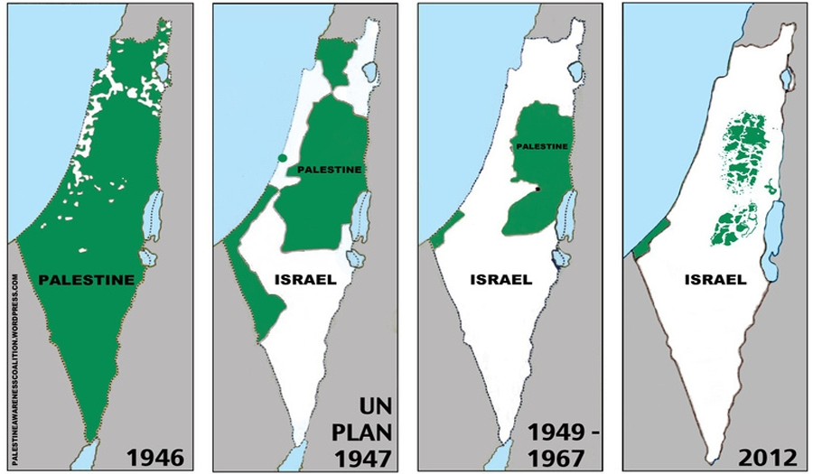

Sejarah Palestina

Pada tahun 1946, Transyordania memperoleh kemerdekaan dari Mandat Britania atas Palestina. Pada tahun 1947, PBB mengadopsi rencana pembagian wilayah mandat untuk solusi dua negara.Rencana tersebut diterima oleh para pemimpin Yahudi tetapi ditolak oleh para pemimpin Arab, dan Inggris menolak untuk melaksanakan rencana tersebut.
Menjelang penarikan terakhir Inggris, Badan Yahudi untuk Israel, yang dipimpin oleh David Ben-Gurion,
mendeklarasikan pembentukan Negara Israel sesuai dengan rencana yang diusulkan PBB.
Pada tanggal 14 Mei 1948, para pemukim Zionis mendeklarasikan negara Israel.
Pada tahun 1948, pecah Perang Arab-Israel. Selama perang, Israel memperoleh wilayah tambahan karena menang perang.
Mesir memperoleh kendali atas Jalur Gaza dan Transyordania mendapatkan kontrol atas Tepi Barat.
Komite Tinggi Arab tidak mendeklarasikan negaranya sendiri dan sebaliknya,
bersama dengan Transyordania, Mesir, dan anggota Liga Arab lainnya pada saat itu, memulai aksi militer yang mengakibatkan Perang Arab-Israel tahun 1948.
Selama perang, Israel memperoleh wilayah tambahan yang ditetapkan sebagai bagian dari negara Arab berdasarkan rencana PBB.
Mesir menduduki Jalur Gaza dan Transyordania menduduki dan kemudian mencaplok Tepi Barat.
Mesir awalnya mendukung pembentukan Pemerintahan Seluruh Palestina tetapi membubarkannya pada tahun 1959.
Transyordania tidak pernah mengakuinya dan malah memutuskan untuk menggabungkan Tepi Barat dengan wilayahnya sendiri untuk membentuk Yordania.
Aneksasi tersebut diratifikasi pada tahun 1950 tetapi ditolak oleh komunitas internasional.
Pada tahun 1959, Mesir awalnya mendukung terciptanya Pemerintahan Seluruh Palestina, namun dibubarkan.
Pada tahun 1964, ketika Tepi Barat dikontrol oleh Yordania, Organisasi Pembebasan Palestina didirikan di sana dengan tujuan untuk menghadapi Israel.
Pada tahun 1967, Perang Enam Hari ketika Mesir, Yordania dan Suriah berperang melawan orang Israel, berakhir dengan ekspansi teritorial signifikan oleh Israel karena Israel menang atas Perang Enam Hari.
Perang Enam Hari pada tahun 1967, ketika Israel berperang melawan Mesir, Yordania, dan Suriah, berakhir dengan pendudukan Israel di Tepi Barat dan Jalur Gaza, serta wilayah lainnya.
Pada 22 November 1974, KTT Liga Arab 1974 menunjuk Organisasi Pembebasan Palestina (PLO) sebagai wakil sah tunggal rakyat Palestina dan menegaskan kembali hak mereka untuk mendirikan negara merdeka yang mendesak.
PLO telah memiliki status pengamat di Perserikatan Bangsa-Bangsa (PBB) sebagai "entitas non-negara".
Pada 15 November 1988, Deklarasi Kemerdekaan Palestina dinyatakan di Aljir oleh Dewan Nasional (PNC) Organisasi Pembebasan Palestina (PLO).
Pada tahun 1993, dalam Perjanjian Oslo, Israel mengakui tim negosiasi PLO sebagai "mewakili rakyat Palestina",
dengan imbalan PLO mengakui hak Israel untuk eksis dalam damai, penerimaan resolusi Dewan Keamanan PBB 242 dan 338, dan penolakannya terhadap "kekerasan dan terorisme".